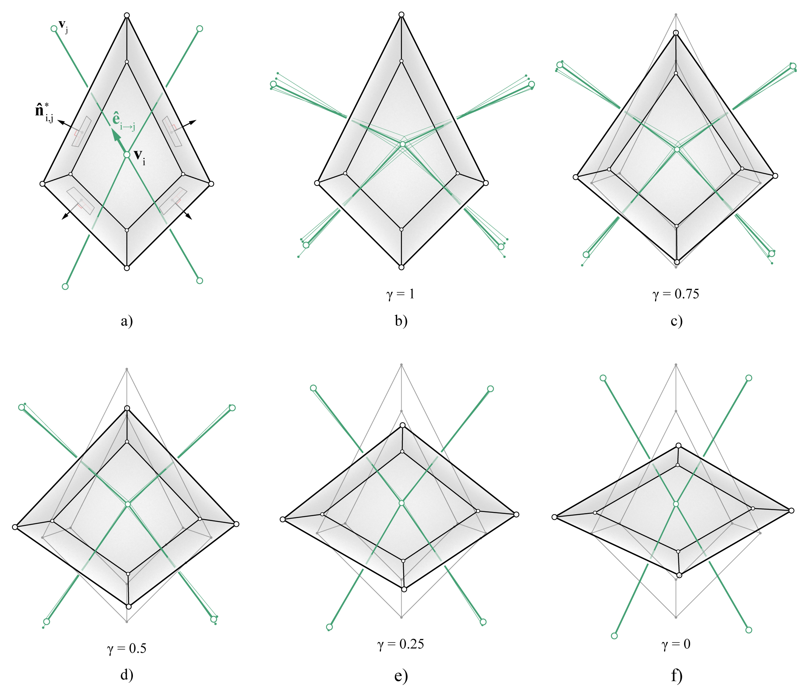

Reciprocation
In 3D graphic statics, every edge of the form diagram is perpendicular to the corresponding faces in the polyhedral force diagram. This perpendicularity constraint is imposed through an iterative procedure, similar to the method implemented for graphic statics applications in 2.5D (1) and 3D (2). The procedure is implemented as the “reciprocation” algorithm, which iteratively parallel-ises the edges of the form diagram towards the normal vectors of their corresponding faces in the polyhedral force diagram. The procedure can also work in the reverse direction, where the edges of the form diagram remains fixed and the faces of the polyhedral force diagrams are iteratively re-oriented.
A weight factor of \(\gamma\) between 0 and 1 can also be set, which determines how much each diagram is allowed to change. If \(\gamma = 1\), the polyhedral force diagram will remain fixed, and only the edges of the form diagram will be re-oriented. If \(\gamma = 0\), the form diagram will remain fixed, and only the faces of the polyhedral force diagram will be re-oriented.
For a detailed description of this procedure, please see 3.
{kind=link}
Example
from __future__ import absolute_import
from __future__ import print_function
from __future__ import division
import compas
from compas_rhino.helpers import volmesh_from_polysurfaces
from compas_3gs.diagrams import FormNetwork
from compas_3gs.diagrams import ForceVolMesh
from compas_3gs.algorithms import volmesh_dual_network
from compas_3gs.algorithms import volmesh_reciprocate
from compas_3gs.rhino import ReciprocationConduit
try:
import rhinoscriptsyntax as rs
except ImportError:
compas.raise_if_ironpython()
__author__ = 'Juney Lee'
__copyright__ = 'Copyright 2019, BLOCK Research Group - ETH Zurich'
__license__ = 'MIT License'
__email__ = 'juney.lee@arch.ethz.ch'
# ------------------------------------------------------------------------------
# 1. make vomesh from rhino polysurfaces
# ------------------------------------------------------------------------------
layer = 'force_volmesh'
guids = rs.GetObjects("select polysurfaces", filter=rs.filter.polysurface)
rs.HideObjects(guids)
forcediagram = ForceVolMesh()
forcediagram = volmesh_from_polysurfaces(forcediagram, guids)
forcediagram.layer = layer
forcediagram.attributes['name'] = layer
forcediagram.draw(layer=layer)
# ------------------------------------------------------------------------------
# 2. make dual network (form diagram)
# ------------------------------------------------------------------------------
layer = 'form_network'
formdiagram = volmesh_dual_network(forcediagram, cls=FormNetwork)
formdiagram.layer = layer
formdiagram.attributes['name'] = layer
x_move = formdiagram.bounding_box()[0] * 2
for vkey in formdiagram.vertex:
formdiagram.vertex[vkey]['x'] += x_move
formdiagram.draw(layer=layer)
# ------------------------------------------------------------------------------
# 3. get reciprocation weight factor
# ------------------------------------------------------------------------------
weight = rs.GetReal(
"Enter weight factor : 1 = form only... 0 = force only...", 1.0, 0)
# ------------------------------------------------------------------------------
# 4. reciprocate
# ------------------------------------------------------------------------------
forcediagram.clear()
formdiagram.clear()
# conduit
conduit = ReciprocationConduit(forcediagram, formdiagram)
def callback(forcediagram, formdiagram, k, args):
if k % 2:
conduit.redraw()
# reciprocation
with conduit.enabled():
volmesh_reciprocate(forcediagram,
formdiagram,
kmax=1000,
weight=weight,
edge_min=0.5,
edge_max=20,
tolerance=0.01,
callback=callback,
print_result_info=True)
# update / redraw
forcediagram.draw()
formdiagram.draw()
References
- 1
Rippmann, M., L. Lachauer, and P. Block (2012). Interactive vault design. International Journal of Space Structures 27 (4), 219–230.
- 2
Akbarzadeh M., Van Mele T. and Block P. On the equilibrium of funicular polyhedral frames and convex polyhedral force diagrams. Computer-Aided Design 63, 118–128.
- 3
Lee J. (2018). Computational Design Framework for 3D Graphic Statics. PhD thesis, ETH Zurich, Zurich, Switzerland.